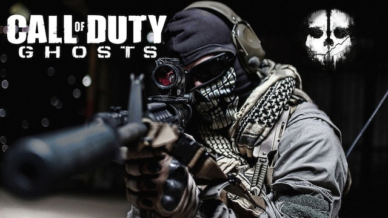

In general, my favorite video games are first-person shooters, such as Call of Duty, Halo, etc. I have been getting games from these two franchises for the past four years. I used to be interested in racing games as well, but I had lost interest. Recently however, my interest in these games has experienced a resurgence. My favorite racing games are the Need for Speed and the Forza Series. Other than these two genres of games, I don't really play anything else. I play these games on my Xbox 360. I wanted the Xbox One, but I don't think I'll have time to play it with college coming around.
